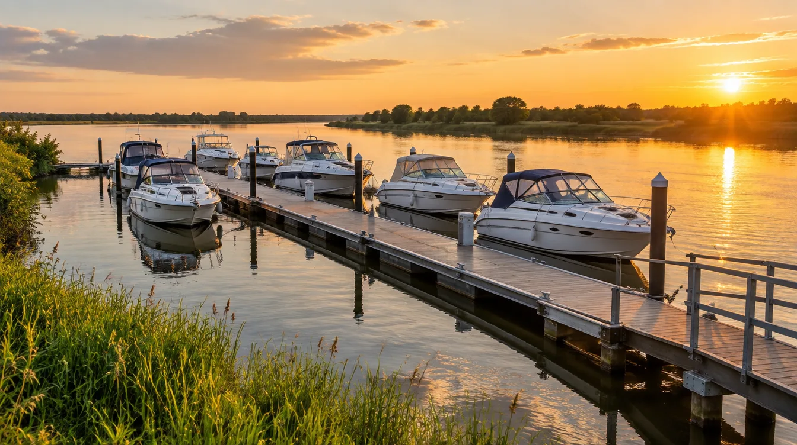
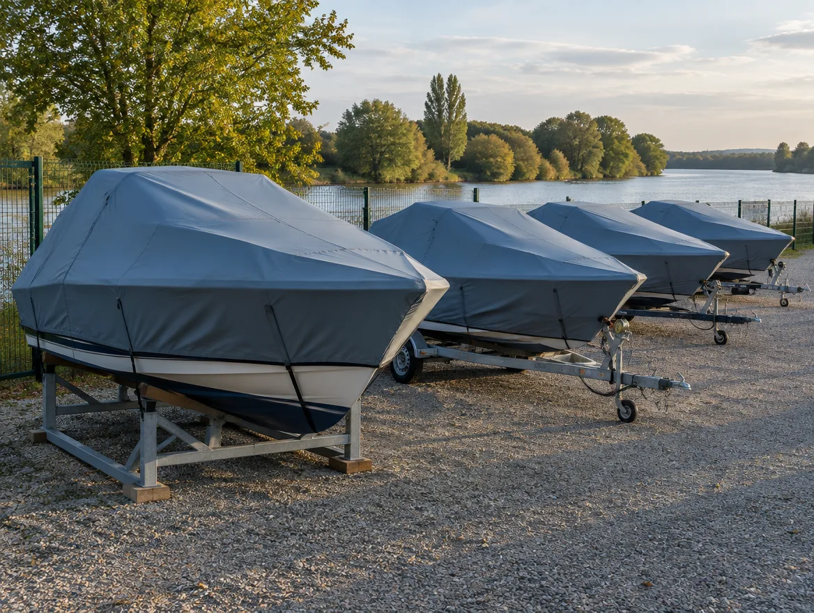
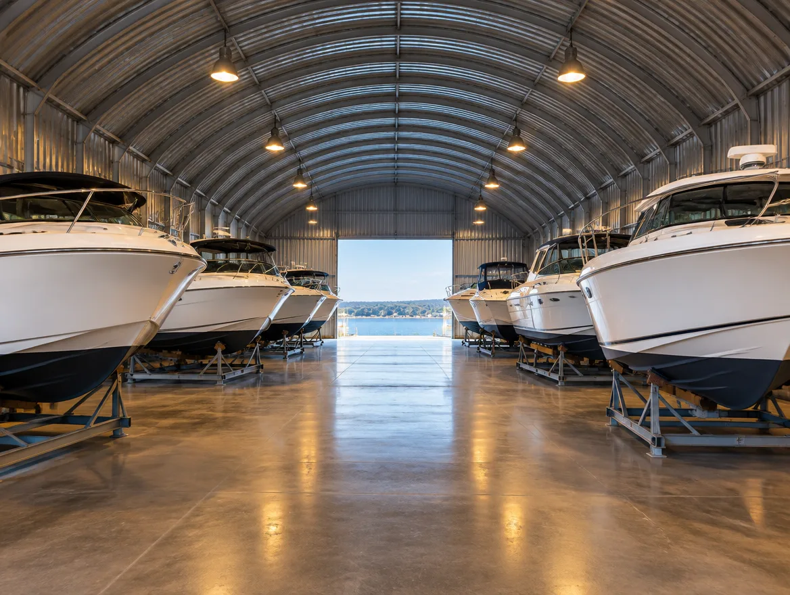
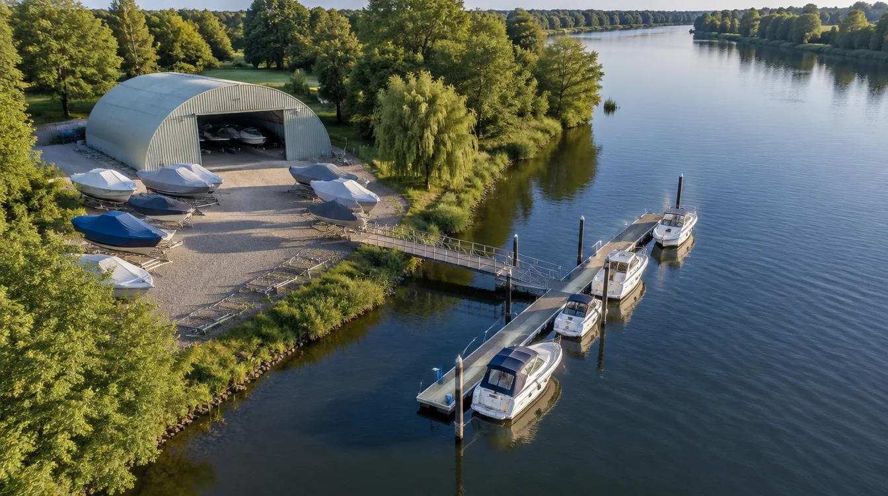

На воді
Пірс і понтон. Човен завжди готовий — приїхали, відв'язали, пішли.
Від
2500 ₴ / місяць
Критий сухий ангар і 40 місць надворі. Від 2500 ₴ на місяць.
Ціни
Приймаємо надувні човни, РІБи, моторні човни й катери. Гідроцикли та судна довші за 10 метрів — за домовленістю, зателефонуйте.
Де стоятиме човен

Пірс і понтон. Човен завжди готовий — приїхали, відв'язали, пішли.

Під щільним брезентом, на кільблоці або причепі. Місце для причепа поруч.

Сухо цілий рік, без ультрафіолету. Лише 10 місць — бронюйте заздалегідь.
Приїхали.Подивились.Залишили човен.
Решту беремо на себе: допоможемо завести човен і надійно його закріпити.
Бронювання
Завантажуємо вільні місця…
Питання

фото згенероване для макетаЗателефонуйте — домовимось про час.